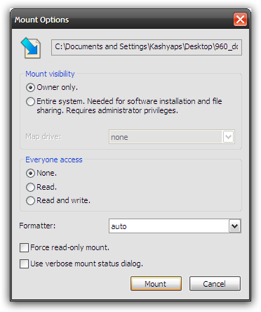

pfmap
Создано: 2009-09-22 — изменено: 2009-09-22 — метки: программы
Заходить в ISO-файлы и ZIP-архивы как в папки
Возможности Pismo File Mount Audit Package: Монтировать содержимое архивов различных форматов в виде диска или папки
- ISO-образов дисков
- ZIP-архивов (для использования файлов вместо того, чтобы ждать, пока они распакуются)
- PFO-архивов (что такое PFO)
Скриншот:
